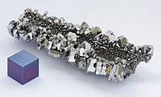

Numero atomico: 41
Massa atomica: 92,91
Temperatura di fusione (°C): 2468
Temperatura di ebolizione (°C): 4742
Energia di prima ionizzazione (kj/mol): 664
Elettronegatività (secondo Pauling): 1,60
Densità: 8,57
Numeri di ossidazione: +3+5
Configurazione elettronica: 1s2, 2s2, 2p6, 3s2, 3p6, 3d10, 4s2, 4p6, 4d4, 5s1
Maggiori Informazioni